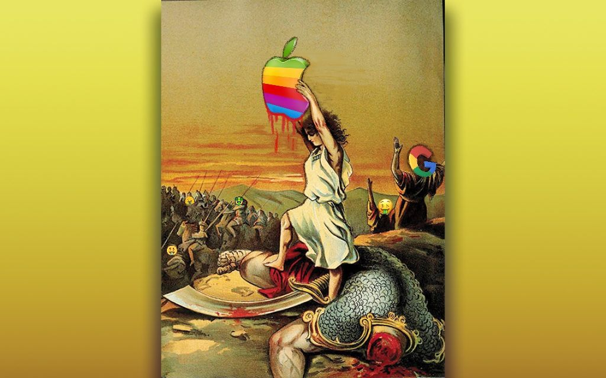

You might not know that the Money Mouth Smiley© was designed and copyrighted in 2007 by Under the Bottom, then a dashing duo of joyful, poor Black boys from the industrial armpits of Los Angeles who had their eyes on more and would do anything to manifest it.
What started as an inside slang symbol for a tight-knit community of SoCal art hustlers grew into an iconic brand in hip hop and streetwear culture, drawn on by rap icons from Diddy to Wiz Khalifa.
Today, Money Mouth Smiley© is reproduced and recognized by billions of people all over the globe, but only one can rightfully own the original design by its authentic creators.
This futurist symbol embodies the aspirational mindset of creators, dreamers, and anyone trying to come up in the world, especially in the face of long odds.
The Money Mouth Smiley© is a brazen digital emblem of David standing over Goliath, sticking his tongue out at the slain cyborg-giant, sling in hand.

Before emojis, nfts, crypto, social media, and the "lifestyle brands" that run on them, there was UTB's Money Mouth Smiley©. Yet its lasting cultural impact shows through every social zeitgeist of our post-2000 metaverse, from music, fashion, and meme culture, to crypto, tech, and finance.
The Money Mouth Smiley© is a piece of universal language, a globally recognized letter of the internet alphabet. While pre-crypto, it uncannily encapsulates crypto's culture and spirit, a rallying cry for a grassroots economic independence and empowerment community at the confluence of tech, art, language, money, and mindset.
So, put your money where your mouth is this August and bid on the Money Mouth Smiley© nft.